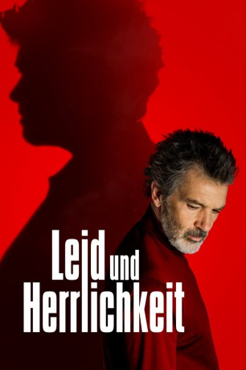

#12081 Leid und Herrlichkeit
Alternativ: Pain and Glory (Englischer Titel)
 
 IMDB-Wertung: 7.7 / 10
IMDB-Wertung: 7.7 / 10  Tomatometer: 97
Tomatometer: 97  Metascore: 88
Metascore: 88 
Berühmt, reich und gefeiert steht Salvador Mallo plötzlich an einem Wendepunkt in seinem Leben und blickt zurück auf eine wilde Reise voller Höhen und Tiefen. Aufgewachsen im Valencia der 60er Jahre, aufgezogen von seiner liebevollen Mutter, die sich ein besseres Leben für ihn wünscht, entdeckt er schon früh seine Leidenschaft für die Magie des Kinos und die Geschichten, die es erzählt. In den 80er Jahren zieht es ihn nach Madrid, wo er auf Federico trifft, eine Begegnung, die sein Leben von Grund auf verändern wird. Gezeichnet von seinem exzessiven Leben blickt Salvador jetzt auf die Jahre zurück, in denen er als Regisseur große Erfolge feierte, schmerzliche Verluste hinnehmen musste, aber auch zu einem der innovativsten und erfolgreichsten Filmschaffenden in Spanien wurde. Durch die Reise in seine Vergangenheit und die Notwendigkeit diese zu erzählen, findet Salvador den Weg in ein neues Leben...
Jahr: 2019
Dauer: 113 Minuten
FSK: 6
Land: Spanien Studio: StudioCanalTonspuren:
Untertitel: Deutsch,
Auflösung: 1080p (1920x1040) Größe: 6082 MB
Genre: Drama
Regisseur: Pedro Almodóvar
Drehbuch: Pedro Almodóvar
Soundtrack: Alberto Iglesias
Darsteller:
 Antonio Banderas als Salvador Mallo
Antonio Banderas als Salvador Mallo- Asier Etxeandia als Alberto Crespo
 Leonardo Sbaraglia als Federico Delgado
Leonardo Sbaraglia als Federico Delgado- Nora Navas als Mercedes
- Julieta Serrano als Jacinta
- César Vicente als Eduardo
- Asier Flores als Salvador Mallo
 Penélope Cruz als Jacinta
Penélope Cruz als Jacinta- Cecilia Roth als Zulema
 Susi Sánchez als Beata
Susi Sánchez als Beata Raúl Arévalo als Venancio Mallo
Raúl Arévalo als Venancio Mallo Pedro Casablanc als Dr. A. Galindo
Pedro Casablanc als Dr. A. Galindo- Julián López als Presentador
- Eva Martín als Radióloga
- Rosalía als Rosita
- Xavi Sáez als Espectador
- Virgil-Henry Mathet als
 Agustín Almodóvar als Sacerdote
Agustín Almodóvar als Sacerdote Warren Beatty als Bud Stamper (archive footage) (uncredited)
Warren Beatty als Bud Stamper (archive footage) (uncredited)- Alba García als (uncredited)
- Mina als Herself (archive footage) (uncredited)
 Marilyn Monroe als Rose Loomis (archive footage) (uncredited)
Marilyn Monroe als Rose Loomis (archive footage) (uncredited) Natalie Wood als Wilma Dean Loomis (archive footage) (uncredited)
Natalie Wood als Wilma Dean Loomis (archive footage) (uncredited)- Sara Sierra als Conchita
- Constancia Céspedes als
- Marisol Muriel als Lavandera Mari
- Paqui Horcajo als Lavandera Mercedes
- Alba Gómez als
- Aline Casagrande als
- Luis Calero als Hermano José María
- Chimezie Eke als Camello
- Esperanza Guardado als
- Miguel Rivera als
- Eneko Galende als
- Fernando Iglesias als Pianista
- Neus Alborch als (uncredited)
- Nadal Bin als Camello (uncredited)
- Topacio Fresh als Espectadora (uncredited)
- Esther García als (uncredited)
Datei: X:\2019(G-M)\Leid und Herrlichkeit (2019, FSK6, 1920x1040).mkv seit 01.12.2019
Festplatte: HD 2018(G-Z)-2019(A-Z)
 Es gibt insgesamt 47 Filme in der Gruppe '2019(G-M)'
Es gibt insgesamt 47 Filme in der Gruppe '2019(G-M)'